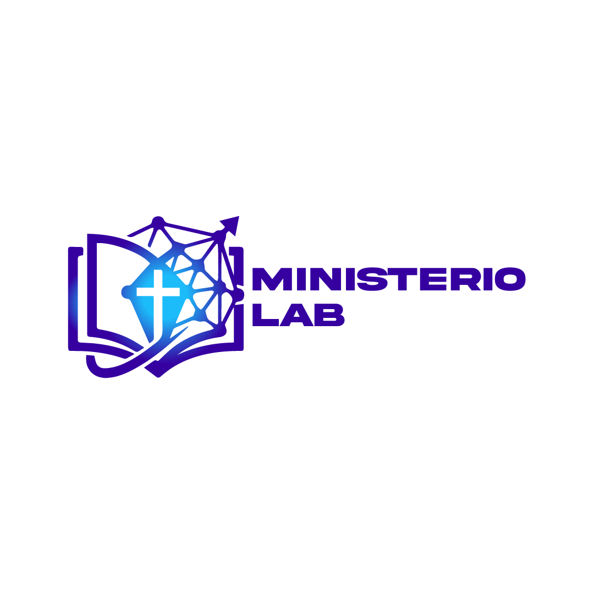

Plataforma de Apoyo Bíblico-Teológico & Capacitación Ministerial
Ministerio Lab nace para respaldar a pastores, líderes y educadores teológicos frente a los cambios generacionales y tecnológicos, derribando las barreras sociales modernas mediante herramientas y recursos bíblicos rigurosos.
Estructuras y métodos diseñados para enriquecer la enseñanza teológica local.
Estrategias metodológicas para comunicar las verdades eternas de la Escritura respondiendo a las preguntas de la cultura actual.
Plantillas para bosquejos, guías para institutos bíblicos y recursos estructurados listos para ser utilizados en tus clases o predicaciones.
Artículos bíblico-teológicos de fondo, análisis historiográficos y capacitaciones interactivas vía Zoom.
Principios exegéticos y metodológicos para transmitir verdades profundas de la fe a mentes hiperconectadas.
Estructura organizada para diseñar series expositivas, coordinar maestros y llevar el control de temas estudiados.
Manual práctico para maestros de institutos bíblicos enfocado en dinámicas participativas y pedagogía moderna.
Entender las transiciones del pasado nos capacita para responder con firmeza a los retos del presente.
La transmisión oral y escrita de la doctrina en medio del contexto greco-romano, preservando el Evangelio en un entorno adverso.
La imprenta como catalizador tecnológico para masificar la lectura bíblica y democratizar la formación teológica.
El reto actual de Ministerio Lab: equipar a los ministerios locales con herramientas modernas para acortar la brecha tecnológica y social.
Pronto iniciaremos módulos interactivos para equipar a pastores, docentes y líderes en pedagogía bíblica y herramientas digitales. ¡Inscríbete a la lista de espera!